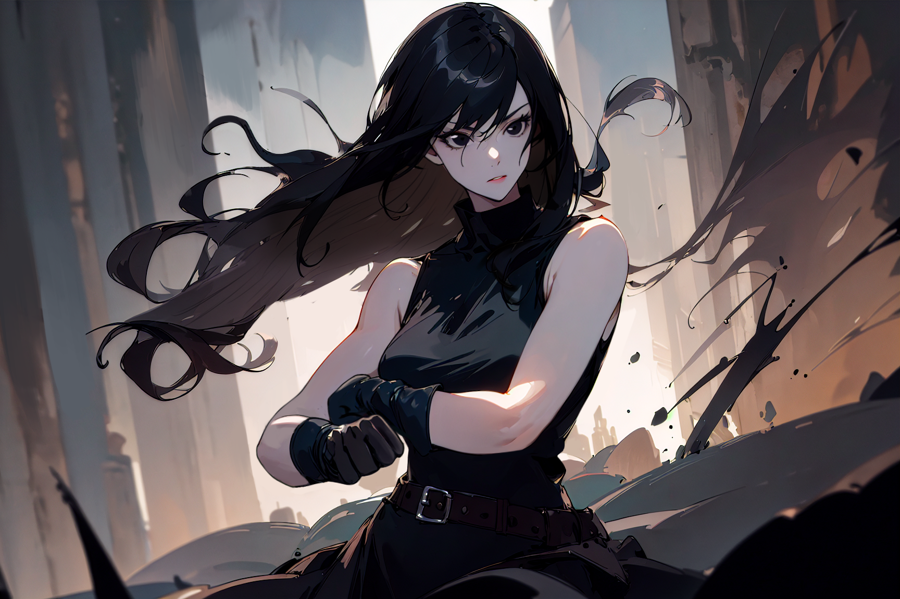
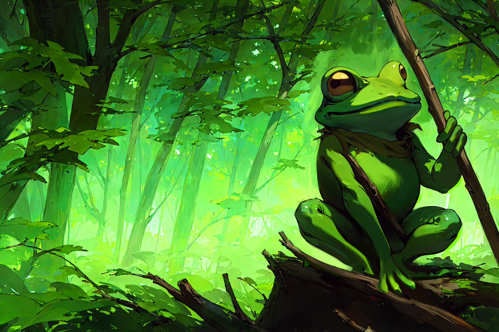
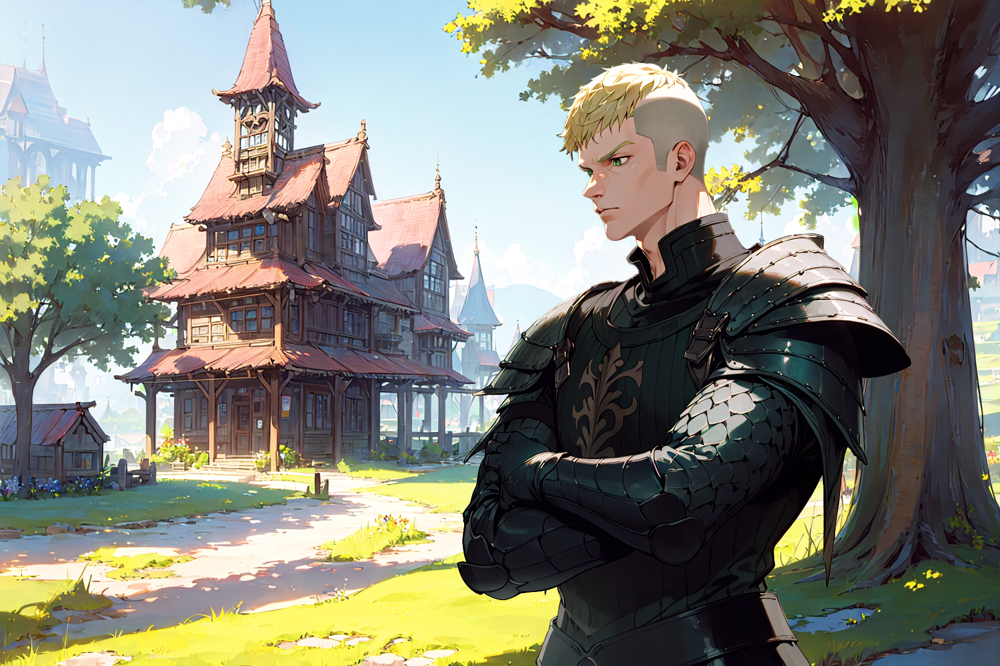

Não sei meu nome.
Não sei de onde vim.
Não sei quem eu era… ou quem sou agora.
Acordei em um lugar estranho, envolta em silêncio e medo. Meu corpo estava fraco,
meu espírito… manchado por algo escuro que eu não consigo entender.
Então eles apareceram — um grupo de viajantes. Não me conhecem.
Não sabem nada sobre mim. E mesmo assim… me ajudaram.
Fizeram um ritual, disseram que havia algo errado em mim,
algo que precisava ser purificado. Senti dor. Depois, alívio.
Mas o vazio continua. As memórias não voltaram. Só há esse buraco dentro de mim,
e uma sensação constante de que algo — ou alguém — está me observando das sombras do
meu passado.
Eles me acolheram. Me tratam com cuidado. Mas posso ver nos olhos deles a dúvida... e, às vezes, o medo.
E eu? Eu também tenho medo.
Medo de lembrar.
Medo do que posso descobrir.
Medo… de quem eu possa ser.
Renascida Sem Nome
Personagens Citados

Taciane
Taciane fala comigo como se eu fosse... normal.
Como se a escuridão que sinto colada à minha pele não fosse importante.
Mas é, não é?
Às vezes, tenho medo que ela veja demais.
Às vezes, tenho medo que ela veja de menos.

Marfim
Queria confiar nele.
Queria acreditar que quem me salvou também se importa.
Mas ele olha para mim como quem vê um livro antigo...
Frágil. Interessante.
Descartável.

Kishimoshi
Kishimoshi não me trata como um fardo.
Não me trata como uma esperança.
Ele me trata como sou: uma dúvida viva.
E isso dói.
Mas, de alguma maneira... também me mantém de pé.